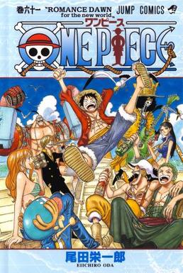

Shounen Jump
Apa itu Shonen Jump
Shonen Jump Mingguan (週刊少年ジャンプ Shūkan Shōnen Janpu). Majalah ini merupakan Majalah Manga terlaris,[4] dan juga salah satu majalah terlama;
terbitan pertama dirilis dengan sampul tanggal 1 Agustus 1968. Serial manga di dalam majalah ini menargetkan pembaca laki-laki muda dan cenderung
berisi adegan laga dalam jumlah besar dan beberapa komedi.
- One Piece
- Naruto
- Bleach
One Piece

Di One Piece terdapat karakter yang sangat kuat di bajak laut Topi Jerami yaitu
- Monkey D Luffy
- Roronoa Zoro
- Vinsmoke Sanji
Naruto

Serial Naruto menceritakan menceritakan seorang ninja yang bernama Naruto Uzumaki yang memiliki cita-cita menjadi HOKAGE
Bleach

Bleach menceritakan seorang remaja Bernama Kurosaki Ichigo yang menjadi Shinigami atau Malaikat Maut